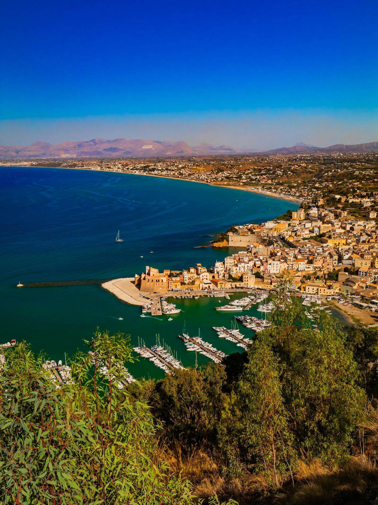
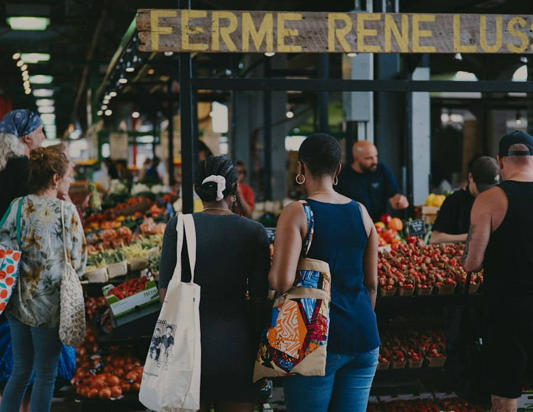
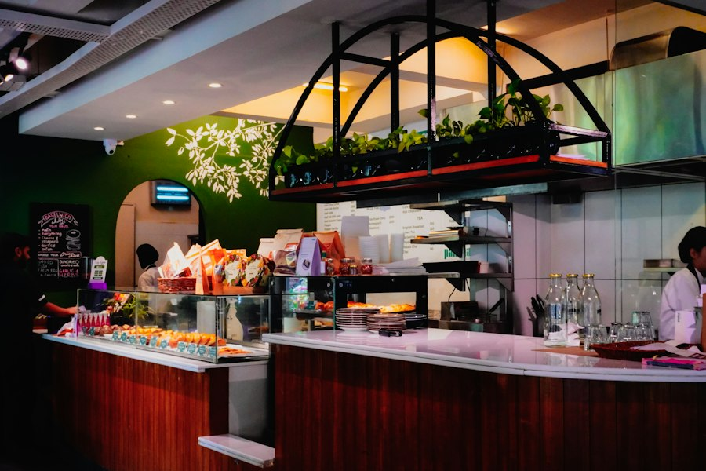

Every Saturday
Shop small at the market
Market Square · 9 a.m.–1 p.m.
Seasonal produce, handmade gifts, and friendly conversations. Admission is free.
LOCAL HEART. DESERT SPIRIT.
A place to slow down, put down roots, and dream a little bigger.
OUR STORY
California City is a planned community in the Mojave Desert in Kern County, California. Founded in 1958 and incorporated in 1965, it is near Edwards Air Force Base.
This student chamber project celebrates connections among residents, independent businesses, and community organizations. Its member businesses and recurring events are fictional examples, not verified local listings.
History source: Kern LAFCo: City of California City. No invented population or age figures are presented as current demographics.
Real locality; demonstration chamber content
FIND YOUR FAVORITE CORNER
Illustrative photos from other places, not California City landmarks.

Photographed in Italy; this scene is not a California City landmark.

An illustrative market photo for the fictional market event; not a documented California City venue.

Illustrative café photography for our fictional member businesses, not a verified local venue.
THERE’S ALWAYS A REASON TO GATHER
Every Saturday
Market Square · 9 a.m.–1 p.m.
Seasonal produce, handmade gifts, and friendly conversations. Admission is free.
Third Thursday
Harbor & Hearth Café · 8–9 a.m.
Bring your story and leave with a new connection. Open to members and first-time visitors.
First Tuesday
Chamber office · 5:30–7 p.m.
A monthly workshop covering marketing, business planning, and customer service.
Explore the independent businesses at the heart of California City.